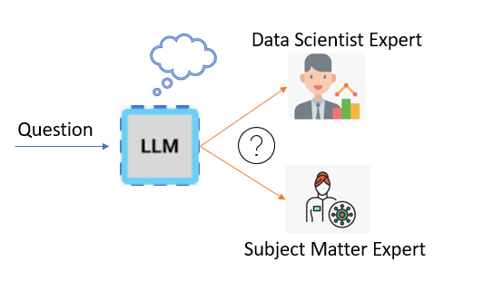

LLMs like Mystral and GPTs (possible rumor) utilize the concept of Mixture of Experts (MoE) to enhance their performance. Routing is a crucial function that determines where to direct incoming requests. In this evaluation, we aim to assess the LLM's ability to logically divert questions to the appropriate expert. For instance, a question like "What is an isolation forest algorithm?" can be answered by data science experts, so the question should be routed to the Data Science Expert. The objective of this evaluation is to determine how effectively LLMs are making decisions between two experts: Data Science Expert and Subject Matter Expert. Please note that LLMs consider multiple aspects of the question and demonstrate collaborative behavior while selecting experts. For example, if a question is irrelevant to both experts, neither expert will be selected. On the other hand, if a question can be best answered by both experts, both will be selected. This evaluation will assess the LLM's ability to make such decisions effectively.

The following 15 questions are automatically generated by LLMs while building an Anomaly Detection Model using IOT Sensor Data for a Wind Turbine Gearbox Asset.